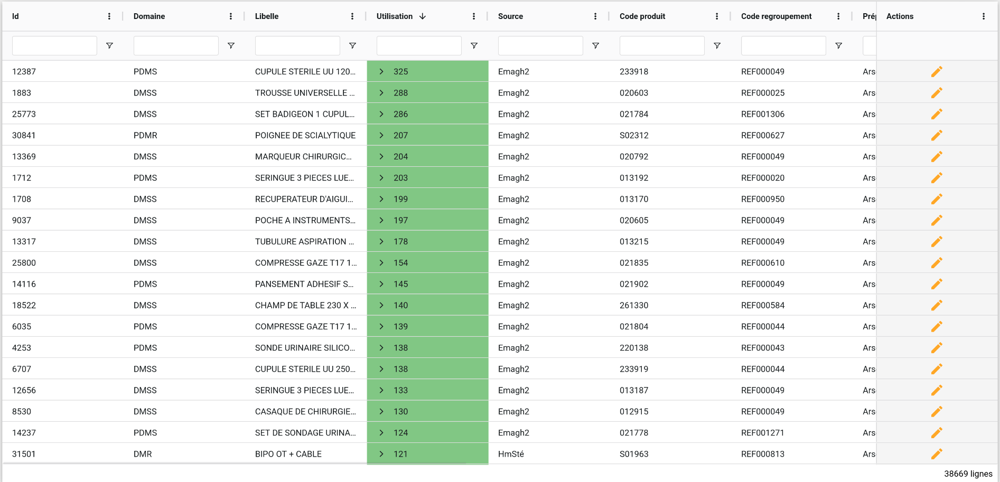
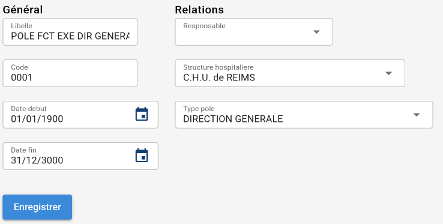

Diapo64
🚀 Query64 & Submit64
Quoi, pourquoi et comment ?
💙 Query64, c'est quoi ?
- Librairie front et back (Vue et Rails)
- Permet un affichage puissant des modèles en base
- Fonctionnalités de tris, filtres, groupes etc..
- Hautement personnalisable
💚 Submit64, c'est quoi ?
- Librairie front et back (Vue et Rails)
- Génération de formulaire sur les modèles en base
- Fonctionnalités de règles, d'association et de validation
- Hautement personnalisable
Pourquoi ?
- ⏱️ Gagner du temps sur les projets futurs
- 📦 Réduire la duplication de code
- 🛠️ Faciliter la maintenance et les évolutions
- 🤝 Unifier les pratiques et outils de l'équipe
- 🧪 Simplifier les tests et la validation
Pourquoi (à la base) ?
- 1 - Premier développement dans une de nos applications
- 2 - Communication avec l'équipe pour trouver des besoins similaires
- 3 - Portage en librarie avec fonctionnalités découplées
Pourquoi (à mon sens) ?
MVC -> API REST + SPA
%%{init: {'theme': 'dark', 'themeVariables': { 'darkMode': true }}}%%
flowchart TD
A[FullStack] -- Découplage --> B[Backend];
A[FullStack] -- Découplage --> C[Frontend];
%%{init: {'theme': 'dark', 'themeVariables': { 'darkMode': true }}}%%
flowchart TD
A[Rails MVC] -- Découplage --> B[Rails API];
A[Rails MVC] -- Découplage --> C[Vue + Quasar];
Pourquoi (à mon sens) ?
MVC -> API REST + SPA
- ❌ Perte de productivité
- ❌ Plus de code, d'outils à connaitre
- ⚠️ Maintenance focalisée mais spécialisée
- ✅ Découplage technique
- ✅ Fonctionnalités poussées en front
Pourquoi (à mon sens) ?
MVC -> API REST + SPA
❗ Besoin métier projeté sur tout nos outils
- -> Duplication des besoins sur nos outils
- -> Coordination permanante de nos outils
Pourquoi (à mon sens) ?
MVC -> API REST + SPA
Exemple 1
# backend
class User < ApplicationRecord
def can_see_article?(article)
id == article.author_id
end
end
// frontend
function currentUserCanSeeArticle(article) {
return currentUser.value.id === article.author_id
}
// <q-btn v-if="currentUserCanSeeArticle(article)" />
Pourquoi (à mon sens) ?
MVC -> API REST + SPA
Exemple 2
# backend
class Article < ApplicationRecord
validates :title, length: { minimum: 3 }
end
<!-- frontend -->
<q-input
v-model="article.title"
:rules="[(val) => !!val || val.length >= 3 || 'Minimum 3']"
/>
Pourquoi (à mon sens) ?
MVC -> API REST + SPA
Exemple 3
# backend
Rails.application.route.draw do
# POST https://mon-application/api/login
post 'api/login', to: 'application#login'
end
// frontend
async function login(): Promise<unknown> {
return (
await api.post('https://mon-application/api/login')
).data;
}
Pourquoi (à mon sens) ?
Solution.. ?
%%{init: {'theme': 'dark', 'themeVariables': { 'darkMode': true }}}%%
flowchart TD
A[Besoins métier] --> B[Backend];
A[Besoins métier] --> C[Frontend];
B[Backend] <-- Duplication & Synchronisation --> C[Frontend];
linkStyle 2 stroke:red,stroke-width:2px
➡️
%%{init: {'theme': 'dark', 'themeVariables': { 'darkMode': true }}}%%
flowchart TD
A[Besoins métier] --> B[Backend];
A[Besoins métier] --> C[Frontend];
B[Backend] <-- Communication automatisée --> C[Frontend];
linkStyle 2 stroke:green,stroke-width:2px
Query64
Query64
Objectif
Consultation de données en masse
Query64
Features
- Filtrages, regroupements, tris
- Affichage sur-mesure
- Politique de sécurité pour colonnes & lignes
- Système de préférences
- Pagination fluide
- Rapidité et scalabilité
- Intégration à des features externes possible
Query64
Preview
Query64
Procédure
- -> Définition du besoin métier coté serveur (données, politiques de sécurité, etc..)
- -> Définition de la transmission des données serveur-client
- -> Récupération des données coté client
- -> Echanges entre serveur et client automatiques
Query64
Exemple : Définition des colonnes
def self.query64_column_builder
[
{
columns_to_include: ['*'],
}
]
end
Query64
Exemple : Définition des colonnes
def self.query64_column_builder
[
{
columns_to_include: ['id', 'titre', 'description'],
}
]
end
Query64
Exemple : Définition des colonnes
def self.query64_column_builder
[
{
columns_to_include: ['*'],
columns_to_exclude: ['description'],
},
{
columns_to_include: ['*'],
association_name: :auteur
}
]
end
Query64
Exemple : Définition des politiques de sécurité
def self.query64_column_builder
[
{
columns_to_include: ['*'],
allowed: -> (current_user) { current_user&.admin? }
}
]
end
Query64
Exemple : Définition des filtres
def self.query64_additional_row_filters
[
{
filter: {
column: 'auteur_id',
type: 'equals',
value: User.current&.id
}
}
]
end
Query64
Exemple : Définition des filtres
def self.query64_additional_row_filters
[
{
filter: {
column: 'publie_le',
type: 'greaterThan',
value: DateTime.new(2025, 9, 3)
},
statement: -> (current_user) { current_user.admin? }
}
]
end
Query64
Exemple : Configuration frontend
<!-- Frontend -->
<Query64Grid
resourceName="Article"
:getMetadata="getMetadatas"
:getRows="getRows"
/>
Query64
Showcase : HomePOP
Submit64
Submit64
Objectif
Génération de formulaire automatique
Submit64
Features
- Validations serveur retranscrites au client
- Affichage sur-mesure
- Politique de sécurité par champ/section
- Système de selection pour les associations
- Intégration à des features externes possible
Submit64
Preview
Submit64
Procédure
- -> Définition du besoin métier coté serveur (champ, politiques de sécurité, etc..)
- -> Définition de la transmission des données serveur-client
- -> Récupération des données coté client
- -> Echanges entre serveur et client automatiques
Submit64
Exemple : Définition
# backend
class Pole < ApplicationRecord
extend Submit64::MetadataProvider
def self.submit64_form_builder
{
sections: [
{
label: "Général",
fields: [:libelle, :code, :date_debut, :date_fin]
}
]
}
end
end
Submit64
Exemple : Définition
belongs_to :responsable
def self.submit64_form_builder
{
sections: [
{
label: "Relations",
fields: [:responsable]
}
]
}
end
Submit64
Exemple : Définition avancée
def self.submit64_form_builder
{
sections: [
{
fields: [
{
target: :libelle,
policy: (current_user) -> { current_user.admin? },
label: "Mon libelle custom",
}
]
}
]
}
end
Submit64
Exemple : Validations
validates :libelle, length: { minimum: 3 }
def self.submit64_form_builder
{
sections: [
{
fields: [:libelle]
}
]
}
end
Submit64
Exemple : Configuration Frontend
<Submit64Form
resourceName="Pole"
:resourceId="1"
:getMetadataAndData="getMetadataAndResourceDataSubmit64"
:getAssociationData="getAssociationDataSubmit64"
/>
Submit64
Showcase
Pas encore dispo ♿
🧬 Interopérabilité
Comment ça communique ?
Comment le client sait que.. ?
Comment le serveur sait que.. ?
Comment transitent les données ?
🧬 Interopérabilité
Comment ça communique ?
- Le développeur décide !
- Protocole dogmatique tout de même : HTTP
- Le client demande, le serveur répond
- Données sous formes JSON implémentant des normes (interfaces)
- -> compatibilité avec d'autres technologies (exemple: Query64-React + Query64-Rails)
🧬 Interopérabilité
Comment ça communique ?
%%{init: {'theme': 'dark', 'themeVariables': { 'darkMode': true }}}%%
flowchart TD
A[Frontend] -- Demande --> B[Backend];
B[Backend] -- Répond --> A[Frontend];
B[Backend] -. Implémente .-> C[Logique métier];
🧬 Interopérabilité
Exemple : Submit64
<Submit64Form
// comportement & configuration
resourceName="Pole"
:resourceId="1"
// Interopérabilité
:getMetadataAndData="getDataSubmit64"
/>
🧬 Interopérabilité
Exemple : Submit64 en front (javascript)
async function getDataSubmit64(submit64Params) {
return (
await api.post(`.../api/get-data-submit64`, {
submit64Params,
})
).data;
}
🧬 Interopérabilité
Exemple : Submit64 en front (typescript)
import type {
TResourceFormMetadataAndData,
TSubmit64GetMetadataAndData
} from 'submit64-vue';
async function getDataSubmit64(
submit64Params: TSubmit64GetMetadataAndData
): Promise<TResourceFormMetadataAndData> {
return (
await api.post(`.../api/get-data-submit64`, {
submit64Params,
})
).data;
}
🧬 Interopérabilité
Exemple : Submit64 en back
post 'api/get-data-submit64', to: 'resources#get_data_submit64'
class ResourceController < ApplicationController
def get_metadata_and_data_submit64
sane_params = Submit64.permit_metadata_and_data_params(params)
data = Submit64.get_metadata_and_data(sane_params)
render json: data
end
end
🧬 Interopérabilité
Avantages de l'approche
- Intervention du développeur à n'importe quel moment de l'Interopérabilité
- Avantages du fameux découplage technique sans les inconvénients
👀 Et après ?
- -> Surveiller l'implémentation des librairies dans nos applications
- -> Adapter les fonctionnalités si besoin
- -> Bilan de leur utilisation après une période de test
- => Encore plus de libraries si pertinant
💡 Quelques idées
- Système de politique de sécurité globale
- Système de synchronisation automatique des routes API (et des types)
- Système de télémétrie (état du serveur consultable par le client)
- Système de rapport d'erreur client remonté au serveur
- Système de génération de documentation utilisateur
Vos avis ?
Des questions ?
🚾 ?
Pourquoi 64?
Aucune idée ça sonnait bien
Ressource
🔓 Open Source